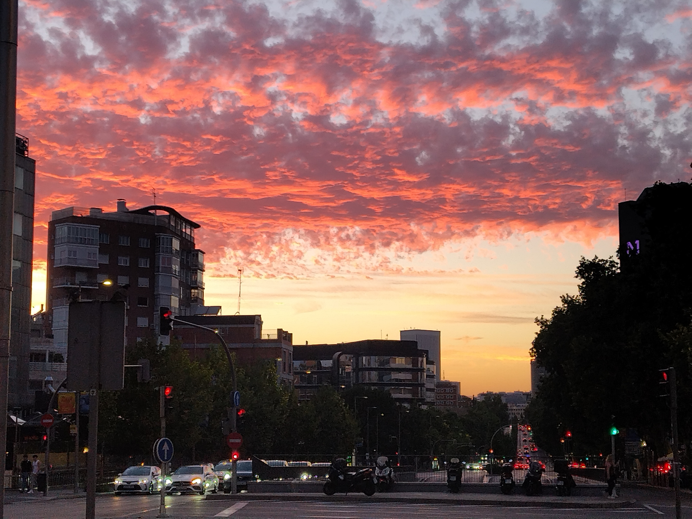

Sketching Madrid in words
Madrid, 18 July 2026
Madrid has always had a strangely soothing effect on me.
Although I never left Torrejón until moving to the UK, between 2008 and 2015 my life was, for all practical purposes, lived in Madrid. Ciudad Universitaria, Moncloa, Princesa, Callao, San Bernardo, Plaza de España, and Sol became my natural habitat. Torrejón, meanwhile, was mostly where I slept, much as the dormitory town it was once conceived to be.
Today, it saddens me to see Madrid gradually following the path taken by so many European cities before it, becoming less a living city than something between a museum and a theme park, catering to visitors uninterested in its soul rather than to the ordinary yet extraordinary people who gave it life. I have also noticed a certain deterioration in everyday civility since the pandemic, although I suspect that the ingrained culture of "please", "thank you", and "sorry" in the country where I currently live—as long as one is not in London or almost anywhere near it—might have shaped my own expectations more than I am willing to admit.
Yet, I find myself returning to Madrid at least once a year, almost as a date with myself, a kind of stress test of who I am today versus who I was then and who I may become tomorrow. It was here that many of the intellectual and personal foundations of my adult life were laid. There are many stories from those years that deserve to be told, though not today.
Two things have remained constant. The first is inspiration.
There is something about wandering through the city without any particular destination, sitting in familiar cafés, revisiting old corners, or meeting friends after months or years apart that never quite loses its effect. Madrid has always invited reflection simply by existing, almost like an invisible welcome regardless of the stage of life one happens to be in.
The second is books.
Madrid remains, to this day, a remarkable cultural centre. Books appear almost everywhere: extracts displayed inside Metro carriages, second-hand stalls scattered across the streets, independent bookshops, and perhaps most emblematic of all, the historic Cuesta de Moyano. It is difficult not to feel that these places sustain an ongoing conversation extending across centuries, one in which echoes from the past remain available to anyone willing to listen, regardless of background or circumstance.
That conversation has shaped my own life more than I could possibly describe in a blog post. Coming from a less than ideal starting point, books gradually opened worlds that eventually led me towards many of the ideas and worldviews that continue to occupy my thoughts today. It is an invitation permanently open to everyone, especially in an age when humanity's written heritage is more accessible than ever before, although one that few people seem to accept.
Perhaps it was therefore particularly fitting that during this trip I finished reading El infinito en un junco, Irene Vallejo's wonderful journey through the history of books and the written word, and, admittedly, a partial source of inspiration for this post. I cannot think of a more appropriate place in which to have turned its final page.
But, if there is one thing Madrid continues to offer above everything else, it is people. For all its imperfections, Madrid remains a place whose greatest strength lies in the warmth of those who inhabit it, whether lifelong residents, recent arrivals, or those merely passing through. Everyone's story is welcome. There is always a new opportunity. There is always room for one more conversation, one more coffee, one more unexpected encounter.
Until the next time.
